Obihiro
Obihiro · Hokkaido
Obihiro
Highlighted on the Hokkaido map.
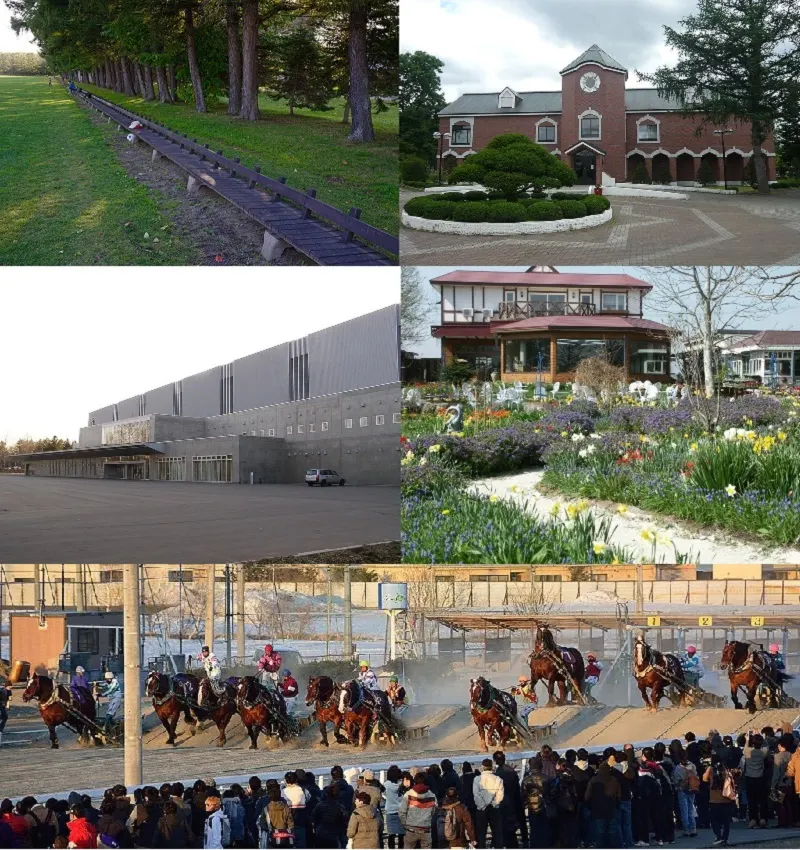
Stay
ビジネスホテルプラムフィールド
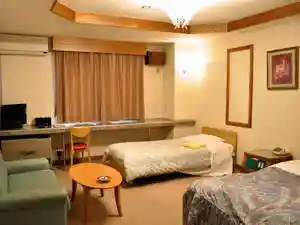
Bijinesuhoterupuramufiirudo
天然温泉 拓聖の湯 スーパーホテルPremier帯広駅前
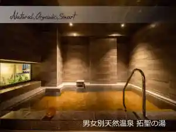
Tennen Onsen Taku Hijiri No Yu Suupaahoteru Premier Obihiroeki Mae
ホテル帯広ヒルズ 西3条通り（BBHホテルグループ）
Hoteru Obihiro Hiruzu Nishi 3 Jou Touri ( Bbh Hoteruguruupu )
ホテルやまこ
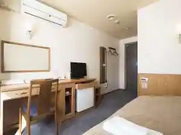
Hoteru Yamako
東横ＩＮＮとかち・帯広駅前
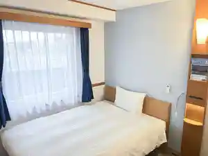
Touyoko I N N Tokachi Obihiroeki Mae
ホテル十勝イン
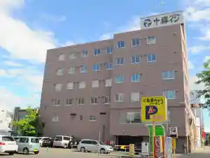
Hoteru Tokachi In
ホテルエリアワン帯広（HOTEL AREAONE）
Hoterueriawan Obihiro ( Hotel Areaone )
天然温泉白樺の湯 ドーミーイン帯広
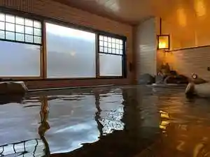
Tennen Onsen Shirakaba No Yu Doomiiin Obihiro
天然モール温泉 ホテルルートイン帯広駅前
Tennen Mooru Onsen Hoteruruutoin Obihiroeki Mae
ホテルパコ帯広中央（旧ホテルパコ帯広３）
Hoterupako Obihiro Chuuou ( Kyuu Hoterupako Obihiro 3 )
帯広グランドホテル
Obihiro Gurandohoteru
HOTEL NUPKA/NUPKA Hanare（ホテルヌプカ／ヌプカハナレ）
Hotel Nupka/Nupka Hanare ( Hoterunupuka / Nupukahanare )
Dining
団欒 帯広駅前店
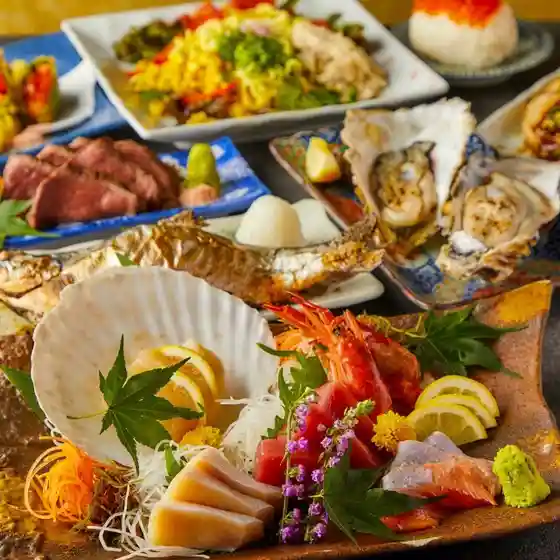
Danran Obihiroeki Mae Mise
炉端とおでん 呼炉凪来 帯広駅前店

Robata Tooden Ko Ro Nagi Rai Obihiroeki Mae Mise
TOKACHI YAKINIKU KARIN
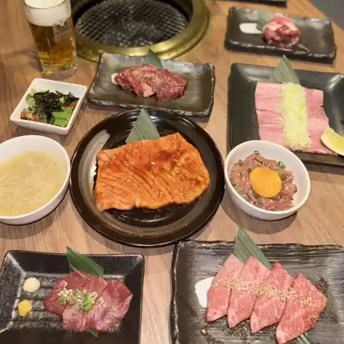
Tokachi Yakiniku Karin
十勝藁焼 炉端の一心
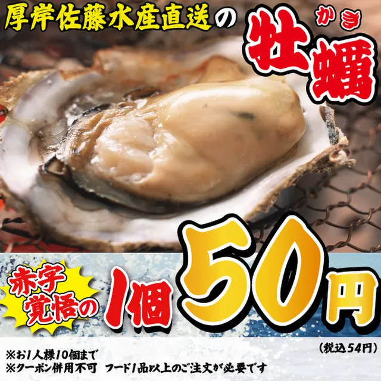
Tokachi Wara Yaki Robata No Isshin
山の猿 帯広駅前店
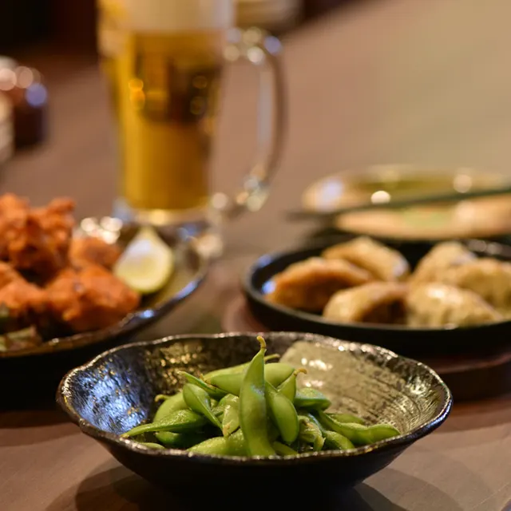
Yama No Saru Obihiroeki Mae Mise
完全個室居酒屋 凪
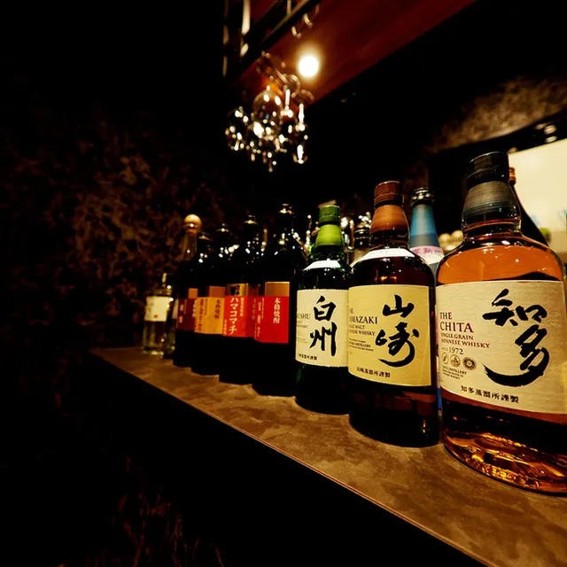
Kanzenkoshitsu Izakaya Nagi
個室完備 大衆とり酒場 とりいちず 帯広店
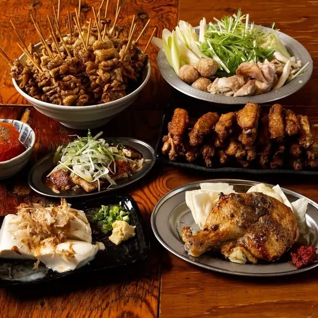
Koshitsu Kanbi Taishuu Tori Sakaba Toriichizu Obihiro Mise
ジンギスカン鷹 帯広店
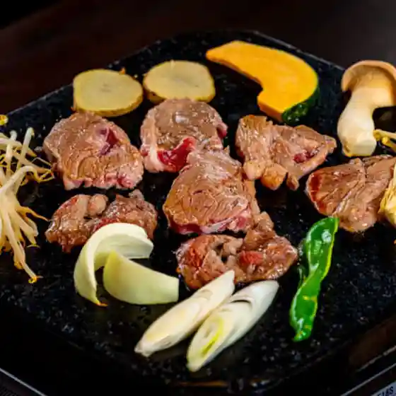
Jingisukan Taka Obihiro Mise
Sakai
Sakai
炭火居酒屋 炎 帯広駅前店
Sumibi Izakaya Honoo Obihiroeki Mae Mise
十勝帯広大衆食堂 とかち晴ル
Tokachi Obihiro Taishuushokudou Tokachi Sei Ru
道楽ぼうず 帯広店
Douraku Bouzu Obihiro Mise
海へ 帯広中央店
Umi He Obihiro Chuuou Mise
かくれんぼ伊酒屋 じろう
Kakurenbo I Sakaya Jirou
炭焼き梅酒房 甘味処 鶯
Sumiyaki Ki Umeshu Bou Amami Tokoro Uguisu
あぶり酒場 串と煙
Aburi Sakaba Kushi To Kemuri
和ダイニング遊
Wa Dainingu Yuu
炭火居酒屋 炎 帯広春駒通り店
Sumibi Izakaya Honoo Obihiro Harugoma Touri Mise
十勝居酒場商店 ととと 帯広駅前店
Tokachi Kyo Sakaba Shouten Tototo Obihiroeki Mae Mise
和洋中ダイニング 弐桂
Wayou Naka Dainingu Ni Katsura
山の猿 南町店
Yama No Saru Minamimachi Mise
備長炭焼処 鶴炭
Binchou Sumiyaki Tokoro Tsuru Sumi
このはな 帯広店
Konohana Obihiro Mise
個室創作割烹 淵神
Koshitsu Sousaku Kappou Fuchi Kami